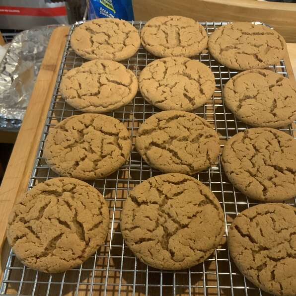

Big Soft Ginger Cookies
These are just what they say: big, soft gingerbread cookies. They stay soft too. One of my favorite cookies I've ever made. All the great ginger taste, and incredibly soft. Yields 2 dozen cookies.
Ingredients
- 2 1/4 cups all-purpose flour
- 2 tsp ground ginger
- 1 tsp baking soda
- 3/4 tsp ground cinnamon
- 1/2 tsp ground cloves
- 1/4 tsp salt
- 3/4 c margarine, softened
- 1 c white sugar
- 1 egg
- 1 tbs water
- 1/4 molasses
- 2 tbs white sugar
Steps
- Preheat oven to 350°. Sift together flour, ginger, baking soda, cinnamon, cloves, and salt. Set aside.
- In a large bowl cream together the margarine and 1 cup sugar until light and fluffy. Beat in the egg, then stir in the water and molasses. Gradually stir the sifted ingredients into the molasses mixture. Shape dough into walnut sized balls, and roll them in the remaining 2 tablespoons of sugar. Place the cookies 2 inches apart onto an ungreased cookie sheet, and flatten slightly.
- Bake for 8-10 minutes in the preheated oven. Allow cookies to cool on baking sheet for 5 minutes before removing to a wire rack to cool completely. Store in an airtight container.